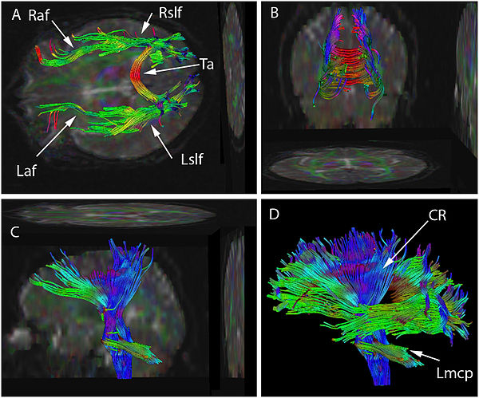

is a 3D modelling technique used to visually represent neural tracts of the brain using data collected by diffussion tensor imaging (DTI). It uses special techniques of magnetic resonance imaging (MRI), and computer-based image analysis. The results are presented in two- and three-dimensional images.
Diffusion-tensor imaging (DTI) is a MRI technique that uses anisotropic diffusion to estimate the axonal (white matter) organisation of the brain.
Fiber tractography (FT) is a 3D reconstruction technique to access neural tracts using data collected by DTI.
Within cerebral white matter, water molecules tend to diffuse more freely along the direction of axonal fascicles than across them. Such directional dependence of diffusivity is termed anisotropy.
Courtesy: youtube.com videos by Monica Giraldo-Chica